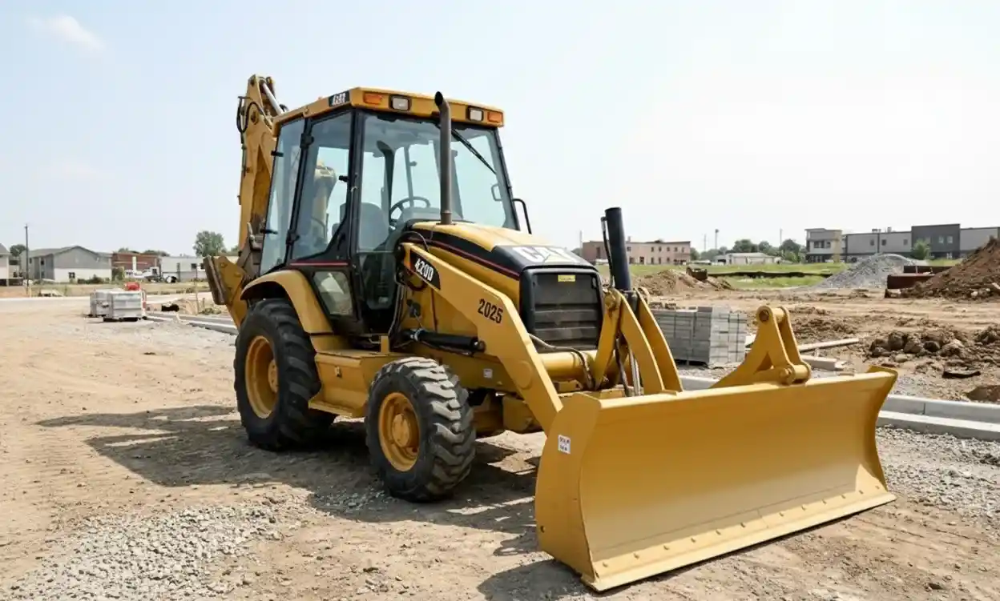

Contamos con la Retroexcavadora Caterpillar 420D y diversos implementos especializados para tus proyectos de construcción, minería y estudios geotécnicos en Santiago y la Región Metropolitana.
 Retroexcavadora
Retroexcavadora
Excavación, carga y movimiento de tierras.
 Martillo Hidráulico
Martillo Hidráulico
Demolición y rotura de roca/concreto.
 Compactación
Compactación
Compactación de suelos y asfaltos.
 Perforadora DTH con Compresor
Perforadora DTH con Compresor
Perforación en roca dura.

MotoniveladoraNivelación de terrenos y conformación vial.
 Divisor Hidráulico de Roca
Divisor Hidráulico de Roca
Fracturación controlada sin explosivos.
 Perforadora SPT
Perforadora SPT
Ensayos de penetración estándar.
Contáctanos para cotización y disponibilidad
📧 contacto@mecanicadesuelossantiago.com
📲 WhatsApp: +56 9 7709 2999
☎️ Teléfono: +56 2 2345 6789